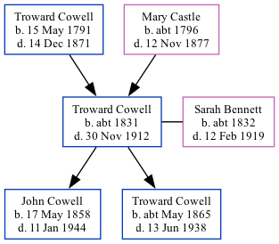

Troward Cowell c1831 - 1912
[ Home ] | [ Calendar ] | [ Surnames Index ] | [ Family History ]The child of Troward Cowell and Mary Castle, Troward Cowell, the great-great-grandfather of <a href="I1.html">Nigel Horne</a>, was born in Wingham, Kent, England <i>c.</i> 1831<span class="citation">1,2,3,4,5,6,7,8,9</span>, was baptized there at St Mary the Virgin Church on Jun 19, 1831 and also married Sarah Bennett (with whom he had 2 children: <a href="I22.html">John</a> and <a href="I85.html">Troward</a>) there at St Mary the Virgin Church, on May 13, 1856<span class="citation">11</span> (Married in Wingham Parish Church). Like his father, he was an agricultural laborer. </p><p>Troward spent all of his life in Kent, England. Throughout his life, he lived in several places around the county: in Wingham Well, Kent, England on Jun 6, 1841<span class="citation">12</span>; at his birthplace in 1851<span class="citation">2</span>; at Stodmarsh Street, Stodmarsh on Apr 7, 1861<span class="citation">3</span>; at Nethergone, Chislet on Apr 2, 1871<span class="citation">4</span>; in Island Road, Westbere on Apr 3, 1881<span class="citation">5</span>; in Upstreet on Apr 5, 1891<span class="citation">6</span> and on Mar 31, 1901<span class="citation">16</span>; and at Woodchurch Farm, Acol on Apr 2, 1911<span class="citation">17</span>. <p>He died on Nov 30, 1912 at 4 Church Cottages, Acol, Kent, England<span class="citation">9,10</span> (senile decaychronic bronchitis/heart failure).
Parents
- Troward was born on May 15, 1791
- Mary was born c. 1796
Children
- John was born on May 17, 1858
- Troward was born c. May 1865
Citations
- 1841 England Census Online publication - Provo, UT, USA: The Generations Network, Inc., 2006.Original data - Census Returns of England and Wales, 1841. Kew, Surrey, England: The National Archives of the UK (TNA): Public Record Office (PRO), 1841. Data imaged from the National
- 1851 England Census Online publication - Provo, UT, USA: The Generations Network, Inc., 2005.Original data - Census Returns of England and Wales, 1851. Kew, Surrey, England: The National Archives of the UK (TNA): Public Record Office (PRO), 1851. Data imaged from the National
- 1861 England Census Online publication - Provo, UT, USA: The Generations Network, Inc., 2005.Original data - Census Returns of England and Wales, 1861. Kew, Surrey, England: The National Archives of the UK (TNA): Public Record Office (PRO), 1861. Data imaged from the National
- 1871 England Census Online publication - Provo, UT, USA: The Generations Network, Inc., 2004.Original data - Census Returns of England and Wales, 1871. Kew, Surrey, England: The National Archives of the UK (TNA): Public Record Office (PRO), 1871. Data imaged from the National
- 1881 England Census Online publication - Provo, UT, USA: The Generations Network, Inc., 2004. 1881 British Isles Census Index provided by The Church of Jesus Christ of Latter-day Saints © Copyright 1999 Intellectual Reserve, Inc. All rights reserved. All use is subject to the
- 1891 England Census Online publication - Provo, UT, USA: The Generations Network, Inc., 2005.Original data - Census Returns of England and Wales, 1891. Kew, Surrey, England: The National Archives of the UK (TNA): Public Record Office (PRO), 1891. Data imaged from The National
- 1901 England Census Online publication - Provo, UT, USA: The Generations Network, Inc., 2005.Original data - Census Returns of England and Wales, 1901. Kew, Surrey, England: The National Archives of the UK (TNA): Public Record Office (PRO), 1901. Data imaged from the National
- 1911 England Census Online publication - Provo, UT, USA: Ancestry.com Operations, Inc., 2011.Original data - Census Returns of England and Wales, 1911. Kew, Surrey, England: The National Archives of the UK (TNA), 1911. Data imaged from the National Archives, London, England.
- England & Wales, FreeBMD Death Index: 1837-1915 Online publication - Provo, UT, USA: The Generations Network, Inc., 2006.Original data - General Register Office. England and Wales Civil Registration Indexes. London, England: General Register Office. © Crown copyright. Published by permission of the Cont
- England & Wales deaths 1837-2007 - Findmypast
- England & Wales, FreeBMD Marriage Index: 1837-1915 Online publication - Provo, UT, USA: The Generations Network, Inc., 2006.Original data - General Register Office. England and Wales Civil Registration Indexes. London, England: General Register Office. © Crown copyright. Published by permission of the Cont
- 1841 England, Wales & Scotland Census - Findmypast (was age 11 and the son of the head of the household)
- 1861 England, Wales & Scotland Census - Findmypast (was age 29 and the head of the household)
- 1871 England, Wales & Scotland Census - Findmypast (was age 39 and the head of the household)
- 1891 England, Wales & Scotland Census - Findmypast (was age 59 and the head of the household)
- 1901 England, Wales & Scotland Census - Findmypast (was age 69 and the head of the household)
- 1911 Census for England & Wales - Findmypast (was age 79 and the father of the head of the household)
Media
Troward Cowell - Sarah Rebecca Bennett - Marriage

Troward Cowell - death certificate

1911 UK Centus page 1

1911 UK Census page 2

1851 UK Census
1861 UK Census
1871 UK Census
1881 UK Census
1891 UK Census
1901 UK Census
1861 England, Wales & Scotland Census Transcription - GBC-1861-0003425894
Canterbury Marriages - GBPRS/CANT/M/97246698/1
England & Wales marriages 1837-2008 - BMD/M/1856/2/AD/000423/032
1911 England, Wales & Scotland Census Transcription - GBC-1911-RG14-04481-0159-3
England & Wales deaths 1837-2007 - BMD/D/1912/4/AZ/000173/077
1891 England, Wales & Scotland Census - GBC/1891/0005761138
1901 England, Wales & Scotland Census - GBC/1901/0006239136
1841 England, Wales & Scotland Census - GBC/1841/0013985844
England Births & Baptisms 1538-1975 - R_884741662
Kent Baptisms - GBPRS/CANT/B/96569990
Family Trees - FMP/1623417760
Family Tree
Generated by Ged2Site. Last updated on Jul 20, 2025